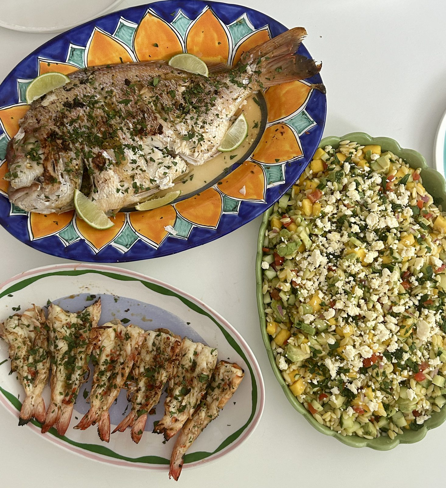

A whole fish, wrapped in foil with garlic, ginger and lime, and cooked straight on the BBQ until the flesh flakes apart. Butterflied king prawns get the same grill, finished in a garlic chilli butter.
Alongside, a mango orzo salad with avocado, cucumber, tomato and feta — bright, fresh, and built for eating outside.
It's a bit of a production, but a great one for a summer weekend when you've got people over and want the table to look like you tried.

4 servings
45–55 mins • High Protein • Base: 4 servings
Fish and prawns bring lean protein and omega-3s, avocado adds healthy fats, and the mango orzo salad rounds it out with fibre and vitamin C — a well-balanced spread that still feels like a treat.